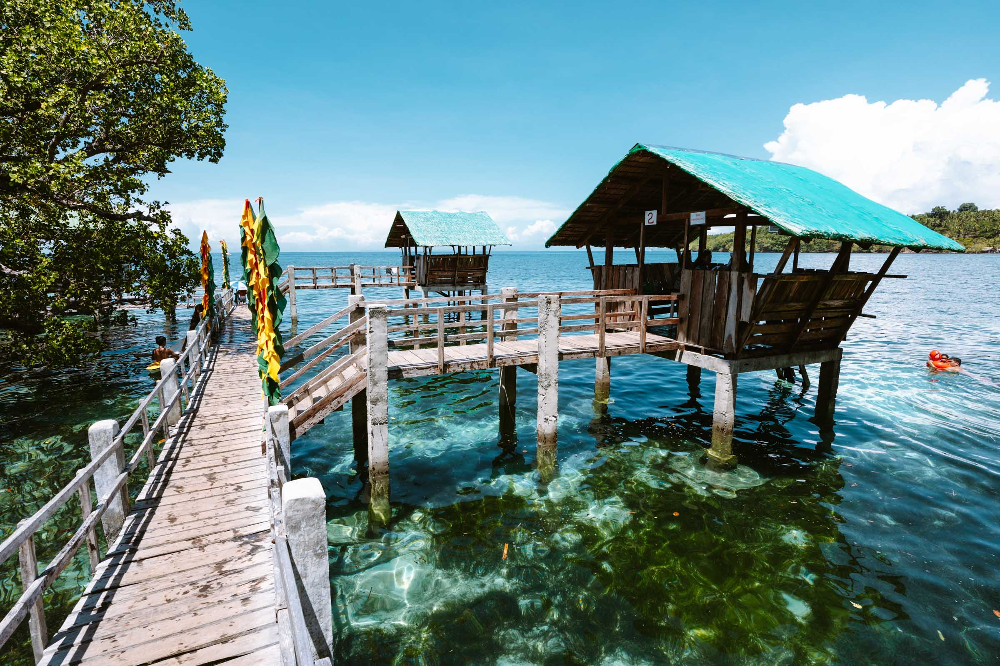
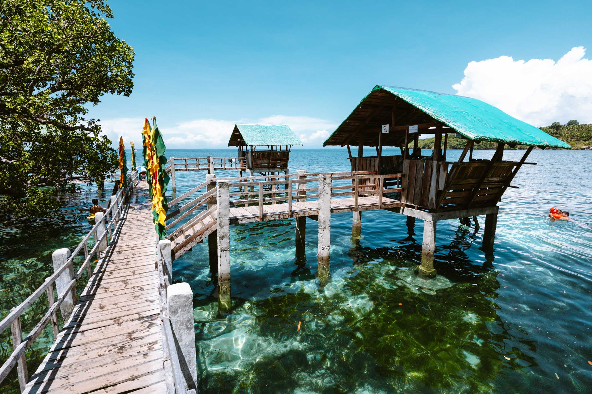

Nestled in the northern part of Mindanao, Camiguin Island is a hidden gem
that promises breathtaking landscapes, rich history, and unique cultural experiences.
From pristine white-sand beaches and cascading waterfalls to volcanic peaks and historic
landmarks, every corner of the island invites adventure and discovery. Whether you’re
seeking a serene escape, an adrenaline-filled hike, or a taste of local traditions,
Camiguin offers a variety of destinations that cater to every traveler. Explore the island’s must-see
spots and uncover the charm that makes Camiguin truly unforgettable.
Whether you’re chasing thrills or just want to relax by the sea, Camiguin
has an adventure waiting for you. From lush mountains and hidden waterfalls to vibrant festivals
and serene beaches, every traveler will find something unforgettable

 
